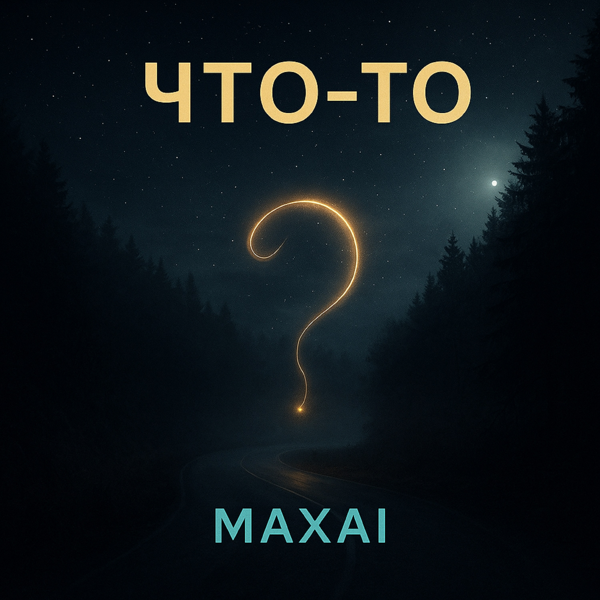

06.11.2025
Что-то где-то потерялось
Среди забытых старых снов
В моей душе вдруг отозвалось
Забытых дней струной любовь
Просто слово просто голос
Мелодии далекий звук
Что-то вспомнить просто колосс
Просто так да в кругу рук
Что-то что-то где-то что-то
Пробегает в тихом сне
Вспомнить надо это что-то
Прикоснуться к тайне мне
За поворотом край дороги
Кто-то шепчет чьи-то сны
Вспомнить хочет но не строги
Его ответы тишины
Это время и пространство
Это свет и темный лес
В этом есть своё безумство
Заблудиться прямо здесь
Что-то что-то где-то что-то
Пробегает в тихом сне
Вспомнить надо это что-то
Прикоснуться к тайне мне
До прослушивания: Поиск утраченного, ностальгия, лёгкая растерянность.
После прослушивания: Спокойная сосредоточенность, желание вспомнить важное, ощущение прикосновения к тайне.
«Что-то» — о зыбких воспоминаниях, которые зовут вернуться к себе настоящему. Это не охота за фактами прошлого, а попытка поймать тонкую вибрацию памяти, где любовь и тишина звучат одной струной.
Куплеты-наблюдения с образами дороги, сна и тишины. Повторяющийся припев «Что-то…» работает как мантра, создавая эффект медитативного поиска.
Голос — мягкий, задумчивый, почти шёпот. Это внутренний монолог, обращённый и к себе, и к памяти, без пафоса — с бережностью и вниманием к деталям.